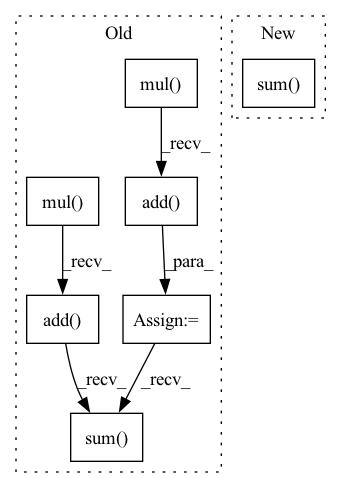

Pattern ID :22474
Before Change
def abs_loss(self, _input: torch.Tensor, atanh_mark: torch.Tensor, atanh_mask: torch.Tensor,
layer: str, neuron: int, next_neuron: int):
mark = atanh_mark.tanh().mul(0.5).add( 0.5)
mask = atanh_mask.tanh().mul(0.5).add( 0.5) * self.nc_mask
X = _input + mask * (mark - _input)
_dict: Dict[str, torch.Tensor] = self.model.get_all_layer(X)
tinners = _dict[layer]
logits = _dict["logits"]
vloss1 = tinners[:, neuron].sum()
vloss2 = tinners.sum() - vloss1
tvloss = total_variation(mark)
mask_loss = mask.sum()After Change
X = _input + mask * (mark - _input)
feats = self.model.get_layer(X, layer_output=layer)
vloss1 = feats[:, neuron].sum()
vloss2 = feats.sum() - vloss1
loss = torch.zeros_like(vloss1)
if use_mask:
mask_loss = mask.sum()In pattern: SUPERPATTERN
Frequency: 3
Non-data size: 7
Instances Fragment ID: 71029067
Project Name: ain-soph/trojanzoo
Commit Name: 1684c28ef38502abb83d37beb845b69007e33274
Time: 2020-07-07
Author: ain-soph@live.com
File Name: trojanzoo/defense/backdoor/abs.py
M Class Name: ABS
N Class Name: ABS
M Method Name: abs_loss(7)
N Method Name: abs_loss(7)
M Parent Class: Defense_Backdoor
N Parent Class: Defense_Backdoor
M File Name: trojanzoo/defense/backdoor/abs.py
N File Name: trojanzoo/defense/backdoor/abs.py
M Start Line: 231
M End Line: 252
N Start Line: 260
N End Line: 283
Before Change
out = x.matmul(W)
outr = out.relu()
outl = torch.nn.functional.log_softmax(outr, dim=1)
outm = outl.mul( m)
outa = outm.add( m)
outx = outa.sum()
outx.backward()
return outx.detach().numpy(), x.grad, W.grad
for x,y in zip(test_tinygrad(), test_pytorch()):After Change
m = torch.tensor(m_init)
out = x.matmul(W).relu()
out = torch.nn.functional.log_softmax(out, dim=1)
out = out.mul(m).add(m).sum()
out.backward()
return out.detach().numpy(), x.grad, W.grad
for x,y in zip(test_tinygrad(), test_pytorch()): Fragment ID: 71029056
Project Name: geohot/tinygrad
Commit Name: 2681c79bc56a42ab4ae67f4c8d04323b6943f266
Time: 2020-10-18
Author: geohot@gmail.com
File Name: test/test.py
M Class Name: AnonimousClass
N Class Name: AnonimousClass
M Method Name: test_pytorch(0)
N Method Name: test_pytorch(0)
M Parent Class:
N Parent Class:
M File Name: test/test.py
N File Name: test/test.py
M Start Line: 24
M End Line: 33
N Start Line: 21
N End Line: 27
Before Change
out = x.dot(W)
outr = out.relu()
outl = outr.logsoftmax()
outm = outl.mul( m)
outa = outm.add( m)
outx = outa.sum()
outx.backward()
return outx.data, x.grad, W.grad
def test_pytorch():After Change
m = Tensor(m_init)
out = x.dot(W).relu()
out = out.logsoftmax()
out = out.mul(m).add(m).sum()
out.backward()
return out.data, x.grad, W.grad
def test_pytorch(): Fragment ID: 71029061
Project Name: geohot/tinygrad
Commit Name: 2681c79bc56a42ab4ae67f4c8d04323b6943f266
Time: 2020-10-18
Author: geohot@gmail.com
File Name: test/test.py
M Class Name: AnonimousClass
N Class Name: AnonimousClass
M Method Name: test_tinygrad(0)
N Method Name: test_tinygrad(0)
M Parent Class:
N Parent Class:
M File Name: test/test.py
N File Name: test/test.py
M Start Line: 11
M End Line: 20
N Start Line: 11
N End Line: 17